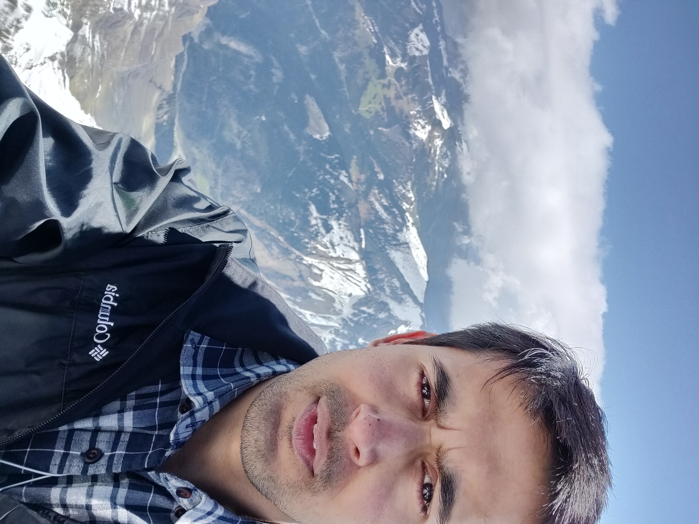

|  | Shivesh ChaudharyPhD Candidate |
I am an experimentalist and computational scientist bringing in tools from machine-learning and computer vision to neuroscience.
I am particularly interested in how stimulus and behavior is encoded in C. elegans brain, and how global brain activity evolves over long timescales.
My current PhD work areas include:
Automated cell identification in C. elegans whole-brain images
Hybrid probabilistic graphical models for accurate tracking of neurons in whole-brain videos
Deep learning based whole-brain 3D cell segmentation
Microfluidic paradigms for naturalistic chemical-mechanical stimulation and simultaneous whole-brain imaging
I easily get interested in broad scientific areas. Thus I am also interested in Computational Microscopy, Optimization Methods, Optimal Transport, Deep Learning for Combinatorial Optimization etc.
Awarded 3rd place prize in 2022 Suddath Awards at Georgia Tech
Presented three talks at AICHE 2021
Presented one Talk and one poster at MicroTas 2021
I was trained as a Chemical Engineer at IIT Kanpur where I finished BS-MS dual degree in 2013. There I worked with Prof. P. K. Bhattacharya on computational modelling of water management in PEM fuel cells and effects of Schroeder's Paradox. After graduating, I worked with a Management Consulting firm developing data-driven solutions for international firms like Wolters Kluwers, Assurant, T-Mobile. Since 2016 I am a PhD Candidate at Georgia Tech, advised by Prof. Hang Lu, where I work on developing tools for fast and easy processing of whole-brain functional imaging data.